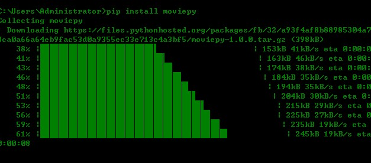
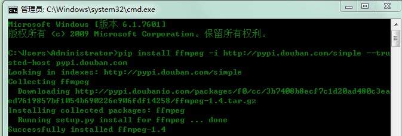
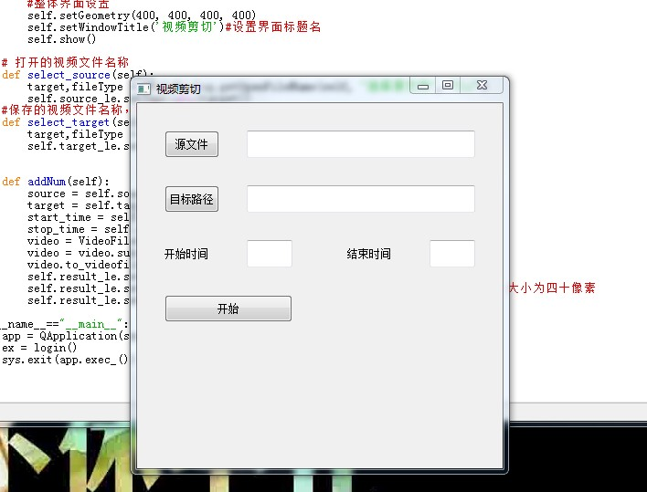
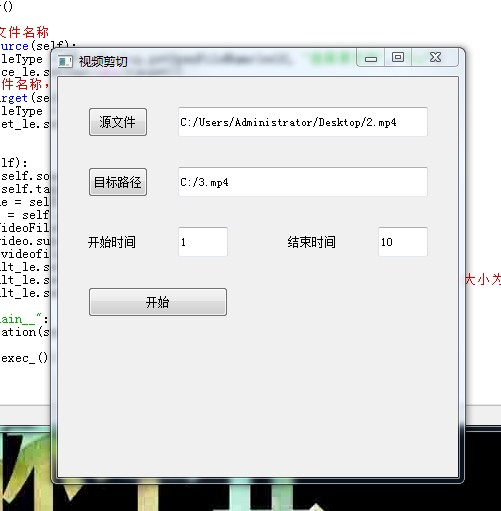
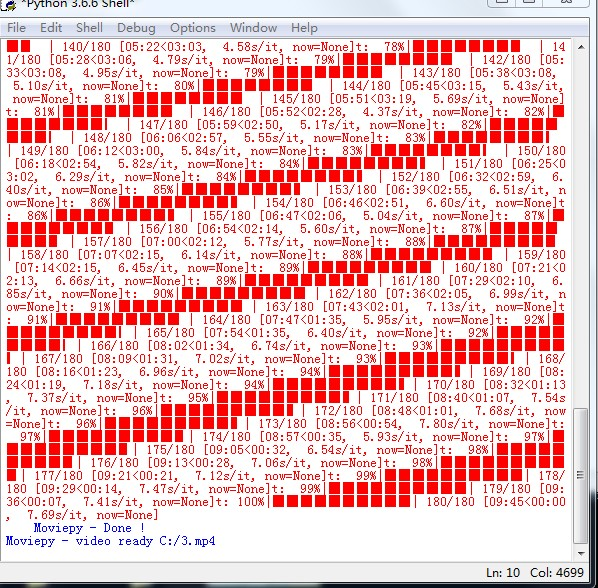

原文连接:https://www.cnblogs.com/badaoliumangqizhi/p/11523908.html
场景
moviepy官网：
https://pypi.org/project/moviepy/
是一个用于视频编辑的Python库：切割、连接、标题插入、视频合成、非线性编辑，视频处理和定制效果的创建。
Github:
https://github.com/Zulko/moviepy
实现
首先你需要安装moviepy
打开cmd输入:
pip install moviepy
其次需要安装ffmpeg,因为网络问题，这里使用豆瓣镜像
pip install imageio-ffmpeg -i http://pypi.douban.com/simple --trusted-host pypi.douban.com
如果之前那么没有安装过PyQt5,你还需要：
pip install PyQt5 -i http://pypi.douban.com/simple --trusted-host pypi.douban.com然后新建python文件，输入代码
import imageio
imageio.plugins.ffmpeg.download()
import win_unicode_console
win_unicode_console.enable()
import sys,os
from PyQt5.QtCore import *
from PyQt5.QtWidgets import (QWidget, QPushButton, QLineEdit,QLabel,
QApplication,QFileDialog)
from moviepy.video.io.VideoFileClip import VideoFileClip
class login(QWidget):
def __init__(self):
super(login,self).__init__()
self.initUI()
def initUI(self):
#源文件选择按钮和选择编辑框
self.source_btn = QPushButton('源文件', self)
self.source_btn.move(30, 30)
self.source_btn.resize(60,30)
self.source_btn.clicked.connect(self.select_source)
self.source_le = QLineEdit(self)
self.source_le.move(120, 30)
self.source_le.resize(250,30)
# 存储文件选择按钮和选择编辑框
self.target_btn = QPushButton('目标路径', self)
self.target_btn.move(30, 90)
self.target_btn.resize(60, 30)
self.target_btn.clicked.connect(self.select_target)
self.target_le = QLineEdit(self)
self.target_le.move(120, 90)
self.target_le.resize(250, 30)
#截切开始时间输入框和提示
self.startLabel = QLabel(self)
self.startLabel.move(30, 150)
self.startLabel.resize(60,30)
self.startLabel.setText("开始秒")
self.start_le = QLineEdit(self)
self.start_le.move(120,150)
self.start_le.resize(50,30)
# 截切结束时间输入框和提示
self.stopLabel = QLabel(self)
self.stopLabel.move(230, 150)
self.stopLabel.resize(60,30)
self.stopLabel.setText("结束秒")
self.stop_le = QLineEdit(self)
self.stop_le.move(320,150)
self.stop_le.resize(50,30)
#保存按钮，调取数据增加函数等
self.save_btn = QPushButton('开始',self)
self.save_btn.move(30, 210)
self.save_btn.resize(140, 30)
self.save_btn.clicked.connect(self.addNum)
#执行成功返回值显示位置设置
self.result_le = QLabel(self)
self.result_le.move(30, 270)
self.result_le.resize(340, 30)
#整体界面设置
self.setGeometry(400, 400, 400, 400)
self.setWindowTitle('视频剪切')#设置界面标题名
self.show()
# 打开的视频文件名称
def select_source(self):
target,fileType = QFileDialog.getOpenFileName(self, "选择源文件", "C:/")
self.source_le.setText(str(target))
#保存的视频文件名称，要写上后缀名
def select_target(self):
target,fileType = QFileDialog.getSaveFileName(self, "选择保存路径", "C:/")
self.target_le.setText(str(target))
def addNum(self):
source = self.source_le.text().strip()#获取需要剪切的文件
target = self.target_le.text().strip()#获取剪切后视频保存的文件
start_time = self.start_le.text().strip()#获取开始剪切时间
stop_time = self.stop_le.text().strip()#获取剪切的结束时间
video = VideoFileClip(source)#视频文件加载
video = video.subclip(int(start_time), int(stop_time))#执行剪切操作
video.to_videofile(target, fps=20, remove_temp=True)#输出文件
self.result_le.setText("ok!")#输出文件后界面返回OK
self.result_le.setStyleSheet("color:red;font-size:40px")#设置OK颜色为红色，大小为四十像素
self.result_le.setAlignment(Qt.AlignCenter)#OK在指定框内居中
if __name__=="__main__":
app = QApplication(sys.argv)
ex = login()
sys.exit(app.exec_())
效果

选择要分割的视频以及目标路径(带后缀)，然后设置开始与结束时间，单位为秒。

点击开始

完成之后，找到设置的目标路径
可能出现的问题：
Python中使用pip安装库时提示：远程主机强迫关闭了一个现有的连接：
https://blog.csdn.net/BADAO_LIUMANG_QIZHI/article/details/100851841
imageio.ffmpeg.download() has been deprecated. Use 'pip install im ageio-ffmpeg' instead.'：
https://blog.csdn.net/BADAO_LIUMANG_QIZHI/article/details/100853266
Imageio: 'ffmpeg-win32-v3.2.4.exe' was not found on your computer; downloading it now.：
https://blog.csdn.net/BADAO_LIUMANG_QIZHI/article/details/100857437
ffmpeg-win32-v3.2.4exe.zip：
https://download.csdn.net/download/badao_liumang_qizhi/11747539